用 NVFP4 预训练大语言模型：4 位浮点怎样撑过 10 万亿 token
Pretraining Large Language Models with NVFP4
阅读状态、进度与收藏只保存在你的浏览器里。本页依据 arXiv v2（2026-03-04）。v2 相对 v1（2025-09-29）只改了三处：修正附录 B 式 (2) 的一个笔误（变量名大小写）、更新贡献者名单、补引一篇随机舍入的早期工作（DoReFa-Net）；正文数字没有变化。
逐节精读
这部分按论文的章节顺序，用本站自己的话把整篇报告从头讲一遍；附录 A–E 的内容并进它们所支撑的正文小节一起讲（附录 B 并进第 2 节，附录 C、E 并进第 4 节，附录 D 并进第 3 节）。读懂某个概念需要的背景知识，会在第一次用到它之前单独讲清楚（青色框）。每个结论都尽量说出“因为什么、所以什么”。报告以 CC BY 4.0 发布，原图放在讲到它的地方，并说明这张图怎么看；原图没画到的概念，用本站的示意图补上。标“推算”的数字是本站根据报告数据算出来的；标“读图”的数字是本站从原图矢量数据里量出来的近似值，报告正文没有写出这些数字。每节末尾有英文原文的链接。
0 导读：这篇报告解决什么问题
训练一个大模型，绝大部分计算花在矩阵乘法上。矩阵乘法用的数越短，同一块芯片每秒能做的乘法就越多，搬运的字节也越少。过去几年，训练精度从 FP32 降到 BF16，又降到 FP8（DeepSeek-V3 用 FP8 训完了 671B 的模型）。NVIDIA 的 Blackwell GPU 又在 Tensor Core 里加入了 4 位浮点（FP4）：在 GB200 上，FP4 矩阵乘的峰值吞吐是 FP8 的 2 倍，在 GB300 上是 3 倍，存同样多的数也只要一半的显存。
难处在于 4 位实在太粗。一个 4 位浮点数（格式叫 E2M1）只能表示 0、±0.5、±1、±1.5、±2、±3、±4、±6 这 15 个值。要用它表示真实张量，就得先把一小块数统一缩放到这个范围里，这就是微缩放（microscaling）。业界开放标准 OCP MX 规范定义的 MXFP4，是每 32 个数共用一个只能取 2 的幂的缩放因子；NVIDIA 自己的 NVFP4 则是每 16 个数共用一个 FP8（E4M3）缩放因子，外加整个张量一个 FP32 缩放因子。用这样的格式做推理已经可行，但从头预训练要把几万亿个 token 的梯度一步步累加进权重，任何系统性的小偏差都可能在长时间训练里放大。本站查到的此前公开的 FP4 训练实验，规模最大约 7B 参数、200B token（Chmiel 等的 FP4 All the Way）。
这份报告给出了一套 NVFP4 预训练配方，并用它把一个 12B 参数的混合 Mamba-Transformer 模型训练了 10T（10 万亿）个 token，这是报告发表时公开记录里最长的 4 位训练。配方由四件事组成：少数对精度敏感的线性层（约 16%，主要在网络末端）留在 BF16；只在求权重梯度的矩阵乘输入上做 16×16 的随机 Hadamard 变换，把块内离群值摊开；权重用 16×16 的二维块缩放，保证前向和反向用的是同一份量化权重；梯度用随机舍入，让量化误差在期望上为零。结果是：验证损失在训练大部分时间里与 FP8 基线相差不到 1%，学习率衰减阶段扩大到略高于 1.5%；下游任务大体持平，例如 MMLU-Pro 5-shot 为 62.58%，FP8 基线为 62.62%。报告还用一个 8B 模型比较了两种 FP4 格式：在同样的配方下，MXFP4 要多用 36% 的 token 才能追上 NVFP4 的损失。
读完这部分，你应该能回答这几个问题：
- E2M1 为什么只有 15 个值？为什么一个离群值就能把一整块数“压成 0”？
- MXFP4 和 NVFP4 的区别具体在哪三处？为什么“缩放因子只能取 2 的幂”会白白浪费一个二进制量级？
- 一个线性层在训练里要做哪三次矩阵乘？它们各自沿哪个维度分块缩放？为什么这会让权重在前向和反向里“长得不一样”？
- 随机 Hadamard 变换、二维缩放、随机舍入各自对付的是什么误差？为什么随机舍入只能用在梯度上？
- “与 FP8 持平”是在什么模型、多长的训练、什么基线下测的？报告没有测什么（比如端到端速度）？
- 报告之后，NVIDIA 自己的 Nemotron 3 是怎么用这套配方的？MXFP4 又在哪些地方落了地？
1 引言：8 位之后，为什么还要再砍一半
一个浮点数由三部分组成：1 位符号、若干位指数、若干位尾数。指数决定数的“量级”（是 0.001 还是 1000），尾数决定在这个量级里能分多细。记号 E\(x\)M\(y\) 表示有 \(x\) 位指数、\(y\) 位尾数（再加 1 位符号）。BF16 是 E8M7，FP8 有 E4M3 和 E5M2 两种，FP4 是 E2M1。指数位越多，能表示的范围越宽；尾数位越多，相邻两个可表示的数靠得越近。位数一少，两头都得让步。
训练里的混合精度是指：矩阵乘法用短格式算（输入是短格式，累加用 FP32），而“主权重”（优化器真正更新的那一份权重）、优化器状态、权重梯度的累加都留在 FP32。每一步先把 FP32 主权重转成短格式参与计算，算出的梯度再回到高精度里更新。这样做的好处是，短格式只负责“算得快”，长期积累的东西留在高精度里，不会被一次次舍入吃掉。FP8 训练（DeepSeek-V3、NVIDIA 的 MXFP8 配方）和本文的 NVFP4 训练都遵循这个框架。FP8 格式本身的细节，见本站 FP8 格式精读 和 DeepSeek-V3 精读 的 FP8 训练一节。
报告的出发点很直接：训练一个前沿模型要做的计算量以“几十到几百个 yottaFLOP”计（1 yottaFLOP 是 \(10^{24}\) 次浮点运算），所以预训练效率的任何提升都直接换成时间、电费和算力。FP8 已经让矩阵乘提速一倍。Blackwell 的 FP4 Tensor Core 在此基础上又带来 2–3 倍的算术吞吐，并让参与计算的张量占用的显存再减半。如果 4 位能用于训练，这笔收益就很可观。
代价是数值上的。4 位格式的可表示值太少，量化误差大，而训练比推理敏感得多：推理只要一次前向的误差可以接受就行，训练却要把梯度的误差在几百万步里一直累加进权重。报告指出，难点集中在“大模型、长训练”：小模型、短训练里看不出问题的做法，到了 12B、10T token 就可能不收敛。
报告的贡献可以分成两层。第一层是格式：它使用 NVFP4（NVIDIA 在 2025 年 6 月的技术博客里系统介绍过的格式，当时面向推理），并说明它比 MXFP4 好在哪里——块更小（16 对 32）、块缩放因子带小数精度（E4M3 对只能是 2 的幂的 E8M0）、外加一级张量级 FP32 缩放。第二层是训练方法：四个技巧（高精度层、随机 Hadamard 变换、二维缩放、随机舍入），每一个都有消融实验支撑。验证方式是把一个 12B 模型训练到 10T token，并与一个按相同数据训练的 FP8 模型逐项比较。
报告也明确划了范围：它关心的是算法和方法，不讨论运行速度和系统层面的优化。这一点读后面的结果时要记住：全文没有一个端到端训练速度的数字。
2 NVFP4 格式：块更小、缩放更细、再加一级张量缩放
2.1 先补：4 位浮点 E2M1 只有 15 个值
E2M1 有 1 位符号、2 位指数、1 位尾数，指数偏置为 1。指数位不为 0 时是“正规数”，值为 \(2^{E-1}\times(1+M/2)\)；指数位为 0 时是“次正规数”，值为 \(M/2\)。把 2 位指数 \(E\) 和 1 位尾数 \(M\) 的 8 种组合逐个算出来，正半轴就是：
| 指数 E | 尾数 M | 值 | 说明 |
|---|---|---|---|
| 00 | 0 / 1 | 0 / 0.5 | 次正规数：0 和最小非零值 0.5 |
| 01 | 0 / 1 | 1 / 1.5 | \(2^{0}\times\) (1 或 1.5) |
| 10 | 0 / 1 | 2 / 3 | \(2^{1}\times\) (1 或 1.5) |
| 11 | 0 / 1 | 4 / 6 | \(2^{2}\times\) (1 或 1.5)，6 是最大值 |
加上符号位共 16 个编码，+0 和 −0 是同一个值，所以一共 15 个不同的值。OCP MX 规范规定 E2M1 不保留无穷大和 NaN，超出范围的值要“饱和”到 ±6，舍入后不到最小次正规数 0.5 的值变成 0。
这条数轴说明了 4 位的两个根本问题。第一是范围窄：最大值只是最小非零值的 12 倍。真实张量里的数，大的可能是小的几千几万倍，直接放进 E2M1，小的全都变成 0，大的全都饱和成 6。第二是分辨率不均匀：靠近 6 的地方间距是 2，一个 5.0 无论舍到 4 还是 6，误差都是 20%。
2.2 微缩放与 OCP MX 规范：MXFP4 是怎么定义的
解决“范围窄”的标准办法是缩放：给一组数配一个缩放因子 \(S\)，存的是 \(q_i = x_i / S\) 的 4 位近似，用的时候再乘回 \(S\)。一组数共用一个 \(S\)，就只需要这组数内部的“相对大小”能装进 E2M1 的 3.58 个二进制量级。组越大，组内最大和最小的差距往往越大，越装不下；组越小，缩放因子越多，额外的存储和计算开销越大。
FP8 训练早期用的是“整个张量一个缩放因子”。DeepSeek-V3 把它细化成激活每 1×128、权重每 128×128 一个 FP32 缩放因子，这是用软件在 Hopper 上实现的。微缩放（microscaling，MX）更进一步：块缩到 32 个数，缩放因子压成 8 位，并且由硬件直接支持，矩阵乘的时候 Tensor Core 自己读缩放因子。
OCP（开放计算项目）在 2023 年 9 月发布了 Microscaling Formats (MX) 规范 v1.0，作者来自 AMD、Arm、Intel、Meta、Microsoft、NVIDIA 和 Qualcomm。它定义了 MXFP8（元素 E5M2 或 E4M3）、MXFP6（E3M2 或 E2M3）、MXFP4（E2M1）和 MXINT8 四类格式，共同点是：
- 块大小固定为 32：沿矩阵乘的点积方向，每 32 个相邻元素组成一块。
- 缩放因子是 E8M0：8 位全是指数、没有尾数、没有符号，偏置 127，能表示 \(2^{-127}\) 到 \(2^{127}\) 的所有 2 的整数次幂（全 1 编码留给 NaN）。也就是说，缩放因子只能是 2 的幂。
- 换算方法：规范建议的转换是，取块内绝对值最大值 \(\mathrm{amax}\)，取“不超过它的最大 2 的幂”，再除以元素格式能表示的最大 2 的幂（E2M1 是 4），得到缩放因子 \(X=2^{\lfloor\log_2\mathrm{amax}\rfloor-2}\)；元素除以 \(X\) 后若超出 ±6 就饱和。
按这个规则，块内最大值除以 \(X\) 之后落在 [4, 8) 之间，落在 (6, 8) 的部分会被截成 6，这叫饱和。NVIDIA 此前的 MXFP8 训练研究（Mishra 等，2025）发现饱和会伤害收敛，所以本文的做法是把缩放因子向上取到下一个 2 的幂，保证不饱和。这个选择的代价在 2.5 节讲。
每个 MXFP4 元素平均占 \(4+8/32=4.25\) 位。OpenAI 在 2025 年 8 月发布的 gpt-oss 模型，MoE 权重就是以 MXFP4 存储的，模型卡写明每参数 4.25 位。
2.3 NVFP4 的三处改动
NVFP4 的元素同样是 E2M1，区别全在缩放上，报告列了三点：
- 块从 32 缩到 16。块越小，块内数值的跨度越窄，越容易装进 E2M1 的范围；一个离群值能“连累”的邻居也从 31 个减到 15 个。
- 块缩放因子从 E8M0 换成 E4M3。E4M3 有 3 位尾数，能表示 2 的幂之间的值（比如 0.5 和 1 之间还有 0.5625、0.625……），于是缩放后的块最大值能被放到非常接近 6 的位置，不再“差一倍”。代价是 E4M3 的范围窄得多：最大 448，最小次正规数 \(2^{-9}\)，只有约 17.8 个二进制量级，远不如 E8M0 的 254 个。
- 再加一级张量级 FP32 缩放。为了把各块的缩放因子挪进 E4M3 能表示的窗口里，整个张量先乘一个 FP32 的缩放因子，块缩放因子是相对于它来存的。
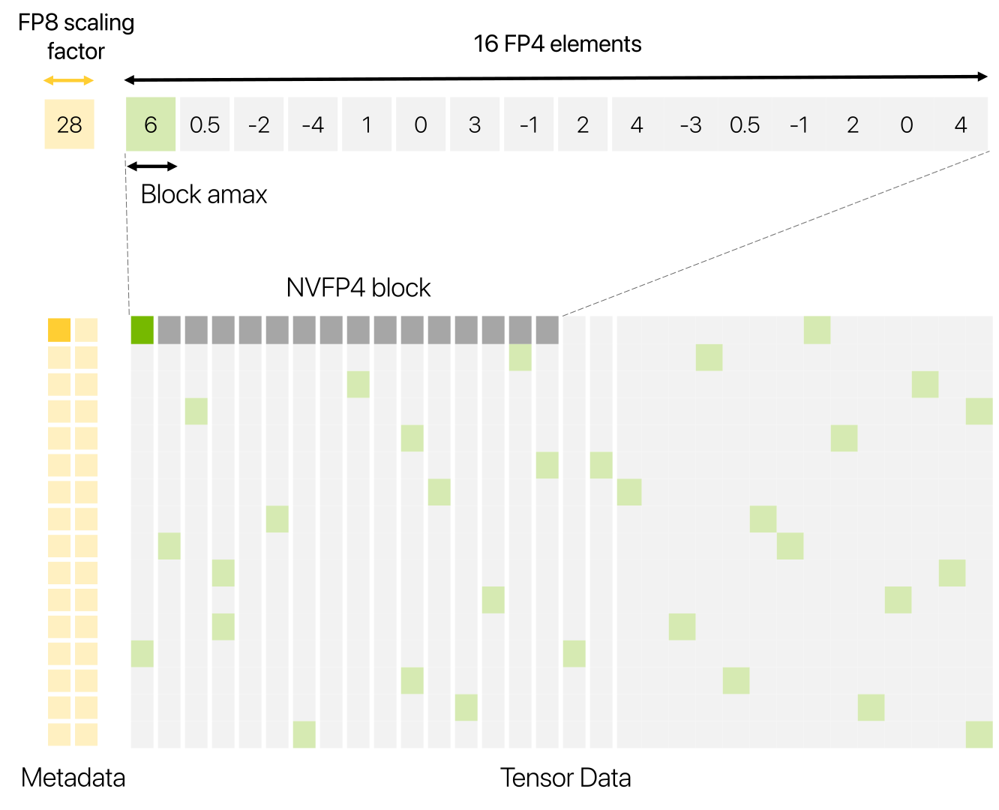
报告用一句话总结 NVFP4 的好处：每块里至少有 1/16 = 6.25% 的值（就是块最大值本身）以“接近 FP8 的精度”被编码，其余值用 FP4。原因是块最大值总被映射到 ±6 附近，量化后它等于 6 乘以块缩放因子，误差只来自 E4M3 缩放因子本身的舍入（E4M3 的相对舍入误差不超过 \(2^{-4}=6.25\%\)，推算）。块最大值往往是块里最“重”的那个数，把它存准对点积结果的贡献最大。相比之下，MXFP4 的所有值都只有 FP4 的精度。
2.4 两级缩放具体怎么算（附录 B），走一个例子
附录 B 把一个高精度张量 \(x\) 转成 NVFP4 的过程写成了四个式子。先算张量级编码缩放：
6 和 448 分别是 E2M1 和 E4M3 的最大值。它的作用是把整个张量的最大值映射到 \(6\times448=2688\)，也就是“一个 FP4 元素乘一个 E4M3 缩放因子”所能表示的最大值。对应的解码缩放 \(s_{\mathrm{dec}}=1/s_{\mathrm{enc}}\) 以 FP32 存下。接着对每个 16 元素块 \(b\) 算块级解码缩放，让块最大值对齐到 6，再乘上 \(s_{\mathrm{enc}}\) 后以 E4M3 存储（舍入方式为就近舍入到偶数，RNE）：
把两式代进去，存下的块缩放因子其实就是 \(448\cdot\mathrm{amax}_b/\mathrm{amax}_x\)（推算）：它记录的是“这块的最大值是全张量最大值的几分之几”，再乘 448 放进 E4M3 的范围。最后，用已经舍入过的块缩放因子反推出真正用于编码的缩放，再把元素量化成 FP4：
这里 \(q(\cdot)\) 是舍入到 E2M1 的函数。之所以要用舍入后的值反推，是为了保证编码和解码互为倒数：\(s_{\mathrm{enc},b}\cdot s_{\mathrm{dec}}\cdot s_{\mathrm{dec},b,\mathrm{e4m3}}=1\)。如果编码时用没舍入的缩放、解码时用舍入后的缩放，整块数会被系统性地放大或缩小一点，报告说这种不一致会影响模型精度。
- 块解码缩放 \(2.6/6=0.4333\)，乘 134.4 得 58.24。E4M3 在 [32, 64) 之间的间距是 4，58.24 离 60 最近，于是存下 60。
- 编码缩放 \(s_{\mathrm{enc},b}=134.4/60=2.24\)。每个元素乘 2.24 后舍入到 E2M1：例如 −2.6 变成 −5.824，舍入到 −6；1.6 变成 3.584，舍入到 4；0.07 变成 0.157，舍入到 0。
- 解码时每个 FP4 值乘 \(60/134.4=0.4464\)：−6 变回 −2.679（误差 3%），4 变回 1.786（误差 12%），0 还是 0。
2.5 2 的幂缩放为什么会丢掉一个二进制量级（附录 B.4）
MXFP4 的缩放因子只能是 2 的幂，所以块最大值除以缩放因子之后，几乎不可能正好等于 6。按规范的向下取法会饱和；按本文的向上取法不会饱和，但会让块最大值落在比 6 小得多的地方。附录 B.4 举了最坏的情形：块最大值是 \(3+\delta\)（比 3 大一点点）。理想缩放是 \((3+\delta)/6=0.5+\delta/6\)，向上取到 2 的幂就是 1。除以 1 之后块最大值还是 \(3+\delta\)，被量化成 3。于是这块数永远用不到 ±4 和 ±6 这四个编码，实际利用的范围只有 \(\log_2(3/0.5)=2.58\) 个二进制量级，而不是完整的 3.58 个，几乎丢了一个。
| 块最大值 | MX 规范（向下取 2 的幂） | 本文的 MXFP4（向上取 2 的幂） | NVFP4（E4M3 缩放，设 \(\mathrm{amax}_x=20\)） |
|---|---|---|---|
| 3.1 | 缩放 0.5 → 6.2，饱和成 6，误差 3% | 缩放 1 → 3.1，舍成 3；4 和 6 永远用不到 | 块缩放存 72 → 5.79，舍成 6，误差 3.7% |
| 7.9 | 缩放 1 → 7.9，饱和成 6，误差 24% | 缩放 2 → 3.95，舍成 4；6 用不到 | 块缩放存 176 → 6.03，舍成 6，误差 0.5% |
| 2.6（上面的例子） | 缩放 0.5 → 5.2，舍成 6，误差 15% | 同左（这里两种取法恰好相同） | 块缩放存 60 → 5.82，舍成 6，误差 3% |
NVFP4 用 E4M3 存块缩放，块最大值总能被放到离 6 不超过几个百分点的位置，所以 8 个非负编码都能用上，块最大值本身也存得准。报告据此总结：NVFP4 的两处改进（更小的块、更精细的缩放）同时提高了离群值的精度，又减少了被量化成 0 的小值。
2.6 Blackwell Tensor Core：表 1 的 2×、3× 指什么
矩阵乘 \(C=AB\) 的每个元素是一个点积 \(\sum_k a_k b_k\)。如果 \(A\) 的一行和 \(B\) 的一列都沿 \(k\) 方向每 16 个元素一块、各带一个缩放因子，那么点积可以拆成一块一块地算：先在块内用 4 位数做 16 次乘加，再把这一段的部分和乘上两个操作数各自的块缩放因子，最后把所有块的结果用 FP32 加起来。附录 B 的式 (5) 写的正是这一步：
两个操作数的张量级解码缩放 \(s^{x}_{\mathrm{dec}}\)、\(s^{y}_{\mathrm{dec}}\) 在整个矩阵乘结束后再乘到输出上。这里有一个后面反复用到的约束：缩放因子必须沿点积（归约）方向分块。因为只有同一块的元素共用同一个缩放因子，才能把缩放因子从块内求和里提出来。
报告的表 1 列出了 Blackwell Tensor Core 支持的微缩放格式：
| 格式 | 元素 | 块缩放 | 块大小 | 相对 BF16 的加速（GB200） | （GB300） |
|---|---|---|---|---|---|
| MXFP8 | E5M2 / E4M3 | UE8M0 | 32 | 2× | 2× |
| MXFP6 | E3M2 / E2M3 | UE8M0 | 32 | 2× | 2× |
| MXFP4 | E2M1 | UE8M0 | 32 | 4× | 6× |
| NVFP4 | E2M1 | E4M3 | 16 | 4× | 6× |
由此可以读出三点。第一，FP4 相对 FP8 的倍数在 GB200 上是 4÷2 = 2 倍，在 GB300 上是 6÷2 = 3 倍，这就是正文说的“2–3 倍”。NVIDIA 的 Blackwell Ultra 技术博客给出了对应的峰值：Blackwell 的稠密 NVFP4 为 10 PFLOPS、FP8 为 5 PFLOPS；Blackwell Ultra 的 NVFP4 提高到 15 PFLOPS，FP8 仍是 5 PFLOPS。所以 GB300 上的 3 倍，来自 FP4 单元变快而 FP8 没变。第二，MXFP4 和 NVFP4 的峰值吞吐相同，两者的取舍只在数值精度和存储开销上。第三，MXFP6 在这一代硬件上并不比 MXFP8 快。除了矩阵乘，Blackwell 还在 FP4 转换指令里原生支持就近舍入和随机舍入两种模式，这一点第 4.4 节会用到。
英文原文 §2 ↗ · 附录 B ↗ · OCP MX 规范 v1.0 ↗ · Blackwell Ultra 技术博客 ↗
3 用 NVFP4 把 12B 模型训练到 10T token
3.1 实验设置：模型、数据、FP8 对照
Mamba-2 是一种状态空间模型层：它不像注意力那样让每个 token 看到之前所有 token，而是维护一个固定大小的“状态”，每来一个 token 就更新一次，所以推理时不需要随长度增长的 KV 缓存。混合 Mamba-Transformer 把大量 Mamba-2 层和少量注意力层、前馈层交错堆起来，NVIDIA 的 Nemotron-H 系列就是这种结构。对本文来说，重要的是它和普通 Transformer 一样，绝大部分计算都在线性层（全连接层）的矩阵乘里：Mamba-2 块和前馈块各有 2 个线性层。
WSD（Warmup-Stable-Decay）学习率是“预热、长期恒定、最后衰减”三段式。本文前 80% 的训练学习率恒定，最后 20% 衰减。损失曲线在衰减开始时会明显变陡地下降，这不是精度格式造成的。
模型与 Nemotron-Nano-12B-v2-Base 结构相同。附录 A.1 给出了配置：
| 项目 | 12B（主实验） | 8B（第 5 节，比 MXFP4） | 1.2B（附录 E 消融） |
|---|---|---|---|
| 结构 | 62 块：6 注意力 + 28 FFN + 28 Mamba-2 | 52 块：4 注意力 + 24 FFN + 24 Mamba-2 | 20 个标准 Transformer 块 |
| 隐藏维 / FFN 维 | 5120 / 20480 | 4096 / 21504 | 2048 / 6144 |
| 注意力头（Q / KV） | 40 / 8 | 32 / 4 | 16 / 8 |
| 训练 token | 10T | 1T（延长实验到 1.5T） | 1T |
| 序列长度 × 批大小 | 8192 × 736 | 8192 × 768 | 8192 × 768 |
| 学习率 | 4.5e-4，最后 20% 衰减到 4.5e-6 | 8e-4，最后 15% 衰减到 8e-6 | 1.2e-3，最后 15% 衰减到 1.2e-5 |
| 数据分段 | 三段：70% / 20% / 10% | 两段：60% / 40% | 两段 |
| 对照基线 | FP8 | BF16 | BF16 |
Mamba-2 块的其他参数是 8 组、状态维 128、头维 64、扩展系数 2、卷积窗口 4；FFN 用平方 ReLU，归一化用 RMSNorm，没有位置编码、dropout 和线性层偏置。优化器是 Adam（\(\beta_1=0.9\)，\(\beta_2=0.95\)），权重衰减 0.1。数据是 10T token 的高质量整理数据与合成数据，覆盖网页、维基、数学、代码、学术、多语言和 SFT 风格的合成数据，分三段混合：前 70% 偏多样性，后 20% 和最后 10% 以高质量数据为主。
FP8 基线怎么训的。它沿用 DeepSeek-V3 和 Nemotron Nano 2 的做法：所有线性层用 E4M3 计算，权重每 128×128 一个缩放因子、激活和梯度每 1×128 一个，缩放因子在线计算、以 FP32 存储；第 1 块和最后 2 块的线性层留在 BF16。NVFP4 模型按第 4 节的配方：前 2 块和最后 8 块的线性层留在 BF16，占全部线性层的 16%，其余全部 NVFP4。两者的其他算子（注意力、归一化等）精度相同。
3.2 损失曲线：大部分时间差不到 1%，衰减阶段扩大到 1.5% 以上
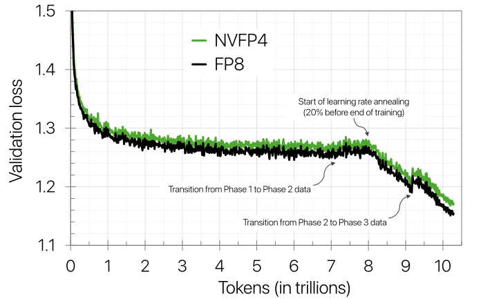
报告用相对损失误差来量化差距：\((L_{\mathrm{NVFP4}}-L_{\mathrm{FP8}})/L_{\mathrm{FP8}}\)。在学习率恒定的阶段，这个误差一直在 1% 以下；学习率衰减之后，差距扩大到略高于 1.5%。按上面读到的数，1.5% 对应约 0.017 的绝对损失差（推算）。作者的解读是：NVFP4 的训练动态基本跟着 FP8 走，只在训练后期出现小的分叉。“衰减阶段差距变大”这个现象后面还会出现（附录 E.5 的激活实验、附录 D 的切换实验），报告没有解释原因；本站的一个直观理解是：学习率变小后，每一步的有效更新变小，量化噪声相对更显眼。
3.3 下游任务：大体持平，代码任务落后
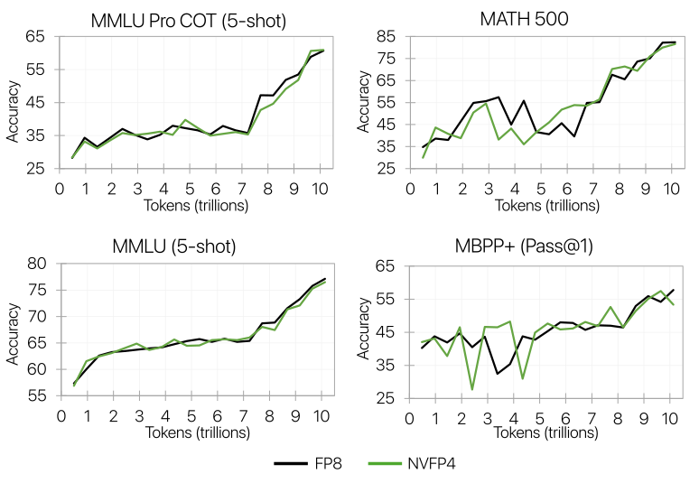
表 2 给出最终检查点的成绩（评测时一律用 BF16 跑推理）：
| 类别 / 任务 | FP8 | NVFP4 | 差（推算） |
|---|---|---|---|
| 通用（平均） | 68.99 | 69.82 | +0.83 |
| MMLU | 77.36 | 76.57 | −0.79 |
| MMLU-Pro 5-shot | 62.62 | 62.58 | −0.04 |
| AGIEval English CoT | 67.01 | 70.31 | +3.30 |
| 数学（平均） | 86.20 | 86.88 | +0.68 |
| GSM8k CoT | 89.08 | 92.27 | +3.19 |
| MATH | 83.32 | 81.48 | −1.84 |
| 多语言（平均） | 77.93 | 80.24 | +2.31 |
| Global MMLU | 74.00 | 74.94 | +0.94 |
| MGSM | 81.87 | 85.53 | +3.66 |
| 代码（平均） | 59.52 | 56.67 | −2.85 |
| HumanEval+ | 59.93 | 57.43 | −2.50 |
| MBPP+ | 59.11 | 55.91 | −3.20 |
| 常识理解（平均） | 77.29 | 76.75 | −0.54 |
| ARC Challenge | 91.81 | 91.81 | 0.00 |
| HellaSwag | 83.83 | 83.09 | −0.74 |
| OpenBookQA | 47.60 | 47.40 | −0.20 |
| PIQA | 82.64 | 82.70 | +0.06 |
| Winogrande | 80.58 | 78.77 | −1.81 |
五个类别里，NVFP4 在通用、数学、多语言三类的平均分略高，在代码和常识两类略低。唯一一致落后的是代码：两项都低 2.5–3.2 分。作者认为这可能是评测噪声，理由是 MBPP+ 恰好在最后一个检查点上掉了一截，换一个检查点可能更好。这个解释说得通但没有被验证：报告没有给出相邻检查点的平均成绩。
3.4 想把差距收回来：最后一段换回高精度（附录 D）
如果最终损失很重要，作者建议在训练末段把精度切回 BF16（或者 MXFP8）。附录 D 用 12B 模型做了这个实验：在 8.2T token 处（学习率衰减开始前不久）把某些张量从 NVFP4 换成 BF16，一直训练到结束。
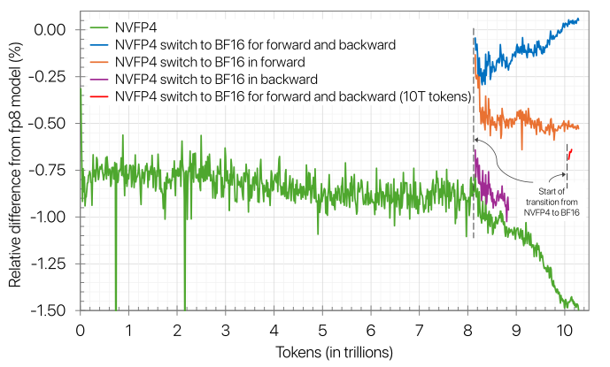
这组实验有三个结论。第一，前向和反向都切回 BF16 并保持最后 18% 的训练，损失能完全追平 FP8；只在最后不到 1% 的训练里切换，也有小幅改善。切得越晚收回得越少，作者推测是学习率已经太低，权重来不及调整。第二，FP4 的损失差距主要来自前向：只把前向换回 BF16，相对误差就从 1.5% 降到 0.5%；只换反向几乎没有用。这和另一篇工作（Chmiel 等的 FP4 All the Way）报告的“切换反向有用”相反，作者在自己的模型上没有观察到那种现象。第三，只换前向的额外开销很小：前向的矩阵乘约占全部矩阵乘的三分之一，在最后 18% 的训练里只换前向，相当于全部计算的约 6% 用高精度。
4 训练方法：让 4 位训练收敛的四件事
报告给出的推荐配方可以浓缩成四条：
- 把少数敏感的线性层留在高精度（约占网络的 15%，大部分放在网络末端）。
- 在求权重梯度的矩阵乘（Wgrad）的两个输入上，做 16×16 的随机 Hadamard 变换。
- 权重用 16×16 的二维块缩放；激活和梯度用沿点积方向的 1×16 一维块缩放。
- 梯度用随机舍入；权重和激活用就近舍入（RNE）。
作者特别说明，小模型、短训练不一定需要全部四条，但 12B、10T 的训练里每一条都不可缺。
4.0 先补：一个线性层里的三次矩阵乘
设一个线性层的输入激活是 \(X\)（形状 \(M\times K\)，\(M\) 是这一批的 token 数，\(K\) 是输入特征数），权重是 \(W\)（形状 \(N\times K\)，\(N\) 是输出特征数）。训练时它要做三次矩阵乘：
- Fprop（前向）：\(Y=XW^{\top}\)，点积沿 \(K\) 方向求和；
- Dgrad（求激活梯度）：\(\partial X=\partial Y\,W\)，点积沿 \(N\) 方向求和，结果传给上一层；
- Wgrad（求权重梯度）：\(\partial W=\partial Y^{\top}X\)，点积沿 \(M\) 方向，也就是沿这一批的所有 token 求和，结果交给优化器。
2.6 节说过，块缩放必须沿点积方向分块。于是同一个张量在不同的矩阵乘里要按不同的方向分块：\(W\) 在 Fprop 里沿 \(K\) 分块，在 Dgrad 里沿 \(N\) 分块；\(X\) 在 Fprop 里沿 \(K\)，在 Wgrad 里沿 \(M\)；\(\partial Y\) 在 Dgrad 里沿 \(N\)，在 Wgrad 里沿 \(M\)。每个张量都要量化两次，而且两次的结果一般不相同。这件事是 4.3 节“二维缩放”的起因。
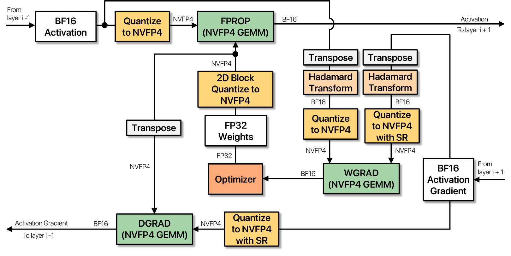
报告的混合精度策略是：线性层的矩阵乘用 FP4，输入是 NVFP4 张量，输出是 BF16 或 FP32。官方实现（Transformer Engine 的 NVFP4 配方）在注释里也写明：因为按行和按列分块的量化结果不等价，需要两种方向时，两份都直接从高精度输入量化得到，以免“量化的量化”叠加误差。
4.1 混合精度：哪些层留在高精度
线性层。作者观察到，把所有线性层都量化成 FP4，训练会发散；而且不同层的敏感程度不同，最后几层最敏感，因为它们需要比 FP4 更大的动态范围和更多的尾数位。所以建议把一小部分末端的层（例如少于 15%）留在 BF16 或 MXFP8。12B 模型用了保守的配置：前 2 块加后 8 块，共 16% 的线性层。图 4 的消融显示只留最后 4 块也能稳定收敛，也就是说本可以有更多层用 FP4。
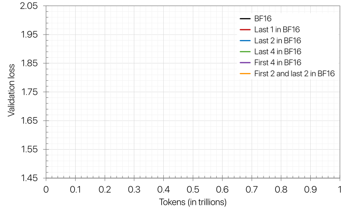
附录 E.2 由此得出：末端的层更敏感；只留开头几块不能救命（前 4 块留 BF16 仍发散），但开头的块和末端的块一起留则可以（前 2 加后 2 稳定）。作者用张量分析补了一个线索：末端几层的权重梯度（也就是 Wgrad 由 FP4 输入算出的结果）量化误差更大。他们建议将来可以用量化误差指标自动决定哪些层留高精度。
线性层以外。为了数值稳定，以下部分保持原精度（BF16 或 FP32）：嵌入层、输出投影头、归一化层、非线性函数，以及注意力的全部组件，包括 softmax、query×key 和 score×value 两次批量矩阵乘。主权重（优化器存的那份）、权重梯度（跨微批和跨数据并行副本累加用）、优化器状态都是 FP32。张量并行的归约（all-reduce 等）用 BF16。
4.2 随机 Hadamard 变换：把块内离群值摊开
Hadamard 矩阵是元素只有 ±1（再除以 \(\sqrt d\) 归一化）的正交矩阵，可以递归构造：\(H_d=\tfrac{1}{\sqrt2}H_2\otimes H_{d/2}\)。它正交，意味着 \(HH^{\top}=I\)，所以可以在矩阵乘的两个操作数上各乘一次，结果不变：
乘上 \(H\) 相当于把向量“转一个角度”。一个向量如果有一个特别大的分量（离群值），转过之后这个大分量会被均匀地分到所有分量上。例如四维向量 \((6,\ 0.2,\ -0.3,\ 0.1)\) 乘 4 阶归一化 Hadamard 矩阵，变成 \((3.0,\ 2.7,\ 3.2,\ 3.1)\)（推算）：向量长度不变，但“一枝独秀”变成了“大家差不多”。随机 Hadamard 变换再乘一个对角线随机取 ±1 的对角矩阵 \(S_d\)，即用 \(S_dH_d\)（随机翻转 \(H_d\) 各行的符号），免得某些恰好和 Hadamard 基对齐的“结构化”离群值转完还在。量化时先转、在转过的空间里算缩放因子、再量化。本站的 QuaRot 精读 第 3 节详细讲了正交变换为什么能消离群值；QuaRot 用它做 4 位推理，本文用它做 4 位训练。
微缩放已经把每个缩放因子管辖的范围缩小到 16 个数，但离群值依然会伤害 FP4：块里有一个特别大的数，块缩放就被它定死，其余小数被挤到 0 附近。随机 Hadamard 变换（RHT）把离群值重新分布成近似高斯的形状，更容易用窄格式表示。报告对 RHT 做了三个具体选择。
只用在 Wgrad 上。RHT 要在矩阵乘的两个输入上都乘，才能在点积里互相抵消。经验上，对 Wgrad 的输入做变换能改善 12B 的训练（图 4 里去掉它损失变差）；而对 Fprop 和 Dgrad，在小规模实验里看不到好处，作者猜测是 FP4 的范围对这两者已经够用。还有一个结构上的原因（4.3 节详述）：Fprop 和 Dgrad 的另一个操作数是权重，而权重为了前后向一致不能做变换，变换就没法抵消。所以 RHT 只用在 Wgrad 上，作者也承认在某些情况下 Fprop、Dgrad 可能同样受益。
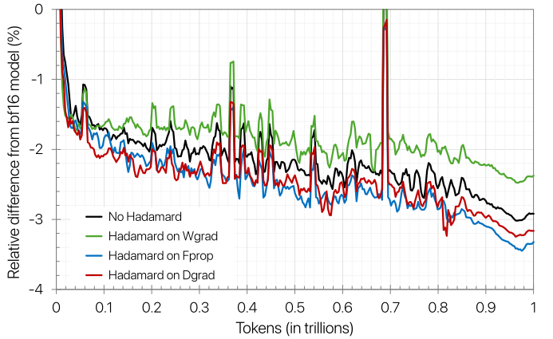
附录 E.4.1 对“变差”的解释是：RHT 本身会引入额外的量化误差，在 Fprop 和 Dgrad 上，它抵不过消除离群值带来的好处。也就是说，RHT 不是“免费的午餐”，用在哪里要靠实验决定。
- 不做变换：缩放由 2.4 决定，16 个数里有 11 个被舍成 0；离群值本身被精确表示。
- 先乘 16 阶随机 Hadamard 矩阵：块最大值从 2.4 降到约 0.76，没有一个数变成 0，误差均匀地分到了每个分量上。
- 总误差：这一个例子里两者的均方误差几乎一样；对 2000 个这样的随机向量取平均，做变换的均方误差反而大约 1.5 倍；对没有离群值的纯高斯向量，两者没有差别。
Hadamard 矩阵取多大。RHT 用 \(d\times d\) 的 Hadamard 矩阵按块乘张量。附录 C 给出开销：对 \(m\times k\) 的张量，要做 \(mkd\) 次乘加、读 \(d^2\) 个矩阵元素，在 \(d\) 远小于张量尺寸时很便宜，可以写成批量矩阵乘、受限于读输入的显存流量，还能和别的算子融合。\(d\) 越大，离群值摊得越开，但计算和显存开销越大；\(d\) 太小，变换后的分布不够像高斯。1.2B 模型上 2×2、4×4、16×16、128×128 几乎没有差别；12B 上则不同。
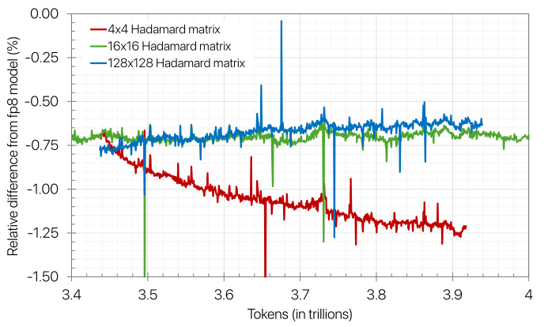
随机符号用几个。作者对比了三种随机化程度：每次变换都换一个新的随机符号向量、整个训练只用一个固定的随机符号向量、完全不用随机符号。1.2B 上三者没差别；12B 上不用随机符号会变差，而每次换新的也没有额外好处。所以 12B 用的是一个固定种子，所有线性层、整个训练共用同一个随机符号向量。
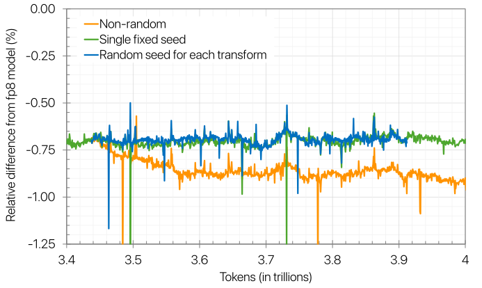
4.3 二维缩放：让前向和反向看到同一份权重
4.0 节说过，缩放和变换都沿点积方向进行，而反向传播要转置张量，点积方向随之改变。于是同一个张量在前向（沿行分块）和反向（沿列分块）有两种不同的量化结果。对权重来说，这意味着链式法则被破坏了：前向算的是 \(y_{\mathrm{fprop}}=w_{\mathrm{fprop}}x\)，反向却用 \(\partial x=w_{\mathrm{bprop}}^{\top}\partial y\)，这是函数 \(y_{\mathrm{bprop}}=w_{\mathrm{bprop}}x\) 的梯度。当 \(w_{\mathrm{fprop}}\neq w_{\mathrm{bprop}}\) 时，反向传播求的不是前向那个函数的导数。作者推测这种不一致会降低模型精度。
二维块缩放。报告的办法是：权重按 16×16 的块（16 个输入通道 × 16 个输出通道）分组缩放，和 DeepSeek-V3 的 128×128 权重块同一思路。一个 16×16 块转置之后还是同一个块，共用同一个缩放因子，所以前向和反向得到完全相同的量化权重。Tensor Core 只认 1×16 的块缩放，所以把这个二维块的缩放因子复制给它包含的 16 个 1×16 小块即可；张量级 FP32 缩放照旧。激活和梯度仍用标准的 1×16 缩放，因为更细的粒度量化得更准。
为什么只管权重、不管激活。激活同样存在前后向不一致（Fprop 沿 \(K\)，Wgrad 沿 \(M\)，而且 Wgrad 那一份还做了 RHT）。作者观察到训练对激活的不一致没那么敏感。另外，权重比激活更能容忍粗一些的缩放粒度，因为权重在训练中会主动去适应 FP4 的可表示值。附录 E.5 的猜测是：权重的不一致会直接体现在激活梯度里，而激活梯度要一层层往回传，误差被反复使用。
RHT 也会造成不一致。和缩放一样，沿点积方向的变换在量化之后也会产生不同的结果，所以权重不做 RHT。这正是 4.2 节说的：Fprop 和 Dgrad 的另一个操作数是权重，激活或梯度做了变换却没法用权重的变换来抵消，所以这两次矩阵乘享受不到 RHT。
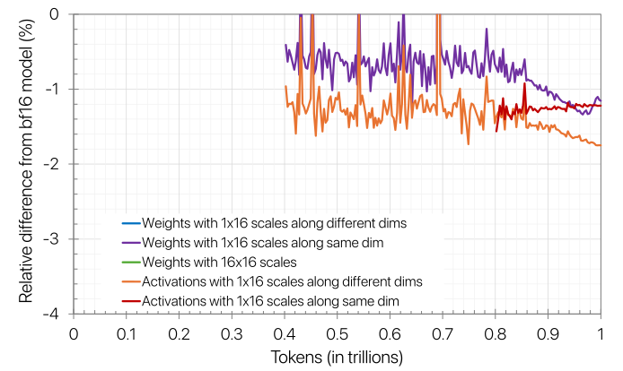
附录 E.5 的结论是：权重的前后向不一致在整个训练过程中都在伤害损失（蓝线一直最差）；二维缩放虽然块更粗，仍比不一致的一维方案好，收回了大约一半的差距（读图推算）。激活对不一致不太敏感，只在学习率衰减的后期才受影响。作者还猜测，对激活做 Hadamard 变换会进一步加剧这种不一致。
4.4 随机舍入：让梯度的量化误差在期望上为零
就近舍入（RNE）把一个数舍到离它最近的可表示值（正好在中点时舍到“偶数”那个）。它对单个数的误差最小，但它是确定的：同一个数每次都被推向同一边。随机舍入（SR）则按距离分配概率：落在 \(a\) 与 \(b\) 之间的 \(x\)，以 \((x-a)/(b-a)\) 的概率舍到 \(b\)、以其余概率舍到 \(a\)。这样 \(\mathbb{E}[\mathrm{SR}(x)]=x\)，误差在期望上为零。
举例（推算）：E2M1 里 0.7 落在 0.5 和 1 之间。RNE 永远给 0.5；SR 以 0.4 的概率给 1、以 0.6 的概率给 0.5，平均正好是 0.7。如果某个梯度分量每步都是 0.7、累加 1000 步，RNE 累加出 500（少了 29%），SR 累加出的期望是 700。再看 0.2：它离 0 比离 0.5 近，RNE 直接给 0（下溢）；SR 以 0.4 的概率给 0.5，信息没有丢。
代价是方差：对 0.7，RNE 的平方误差是 0.04，SR 的期望平方误差是 0.06，大了一半（推算）。所以 SR 用“单次更不准”换“长期不偏”。
报告列举了确定性舍入在 FP4 下产生偏差的三种来源：尾数的分布让舍入倾向某一边、小值下溢成 0、大值饱和到最大可表示值。这些偏差在梯度张量上最明显，会影响收敛。报告的做法是在把高精度值量化成 FP4 时使用随机舍入，而且只用在梯度上：12B 的消融（图 4）显示对梯度做 SR 对收敛必不可少；反向里的其他张量用 SR 没有好处，说明梯度是偏差的主要来源；对前向张量用 SR 则有害，因为它相对就近舍入放大了量化误差。
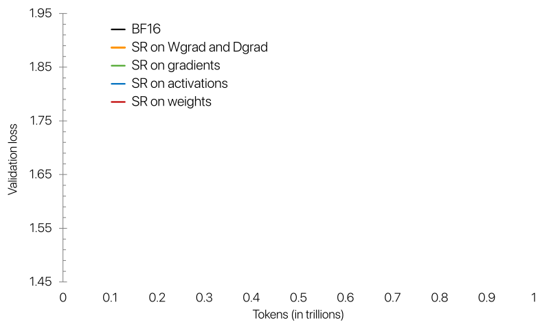
附录 E.3 把这组结果概括为：对梯度做 SR 能让 1.2B 稳定收敛，对激活或权重做 SR 则发散；对反向的所有张量做 SR，比只对梯度做几乎没有额外改善，说明发散来自对前向张量的随机舍入。对 12B，SR 必须同时用在流向 Dgrad 和 Wgrad 的梯度上才能正常收敛。硬件上，Blackwell 的 FP4 转换指令原生支持随机舍入，所以这一步不需要软件模拟随机数舍入。
4.5 四件事放在一起：12B 消融与 1.2B 叠加实验
报告第 4 节开头用图 4 证明“四件事缺一不可”：从完整配方训练到 3.43T token 的 12B 检查点出发，每次去掉一个组件继续训练，看损失变化。
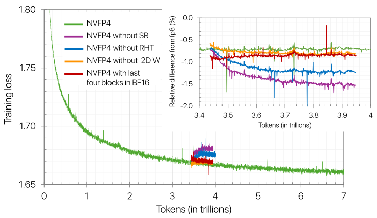
从图 4 可以读出两件事。第一，在 12B 上，随机舍入和 RHT 的作用最大，去掉任何一个，损失都明显变差。第二，“只留最后 4 块”和完整配方差别不大，这就是 4.1 节说“本可以有更多层用 FP4”的依据。报告对图 4 的结论措辞是“去掉任何一个组件都会让收敛变差”，但没有给出数值。
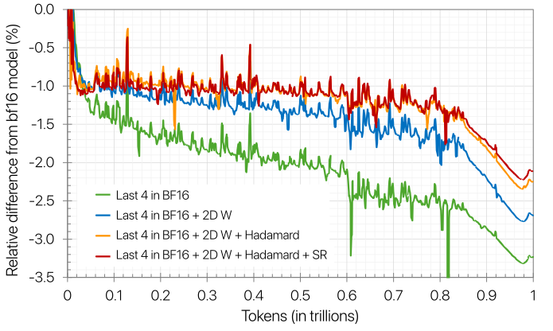
附录 E.1 补充了两点：不加任何技巧的“基础方法”（全部层 NVFP4、所有张量 1×16 缩放、就近舍入）在训练早期就发散；随机舍入这类技巧单独使用能改善稳定性，但最终仍会发散，其中“留一部分层在高精度”对稳定性起关键作用。各项技巧的相对收益取决于加入的顺序，所以图 8 的阶梯不能直接读成每项技巧的“贡献值”。
4.6 走一遍：一个 NVFP4 线性层的一步训练
把前面几小节拼起来，一个用 NVFP4 计算的线性层（不在那 16% 的 BF16 层里）在一步训练中依次经历下面这些事。这一段是本站按报告 §4、图 5 和 Transformer Engine v2.8 的配方整理的，报告本身没有这样逐步写出来。
- 准备权重。优化器手里是 FP32 主权重 \(W\)。先算全张量的 amax 和 FP32 张量缩放，再按 16×16 的块算 E4M3 块缩放，就近舍入成 NVFP4。得到的这一份量化权重前向和反向共用。
- 前向（Fprop）。上一层传来的 BF16 激活 \(X\) 沿 \(K\) 方向按 1×16 分块、就近舍入成 NVFP4，与量化权重做矩阵乘，FP32 累加，输出 BF16 的 \(Y\) 交给下一层。
- 为反向留一份激活。Wgrad 需要沿 token 方向分块的 \(X\)，而且要先做随机 Hadamard 变换。Transformer Engine 的做法是在量化时直接从高精度的 \(X\) 同时算出两种方向的版本，不在已经量化过的数据上再量化一次。
- 反向，求激活梯度（Dgrad）。下一层传回 BF16 的 \(\partial Y\)。它沿 \(N\) 方向按 1×16 分块、随机舍入成 NVFP4，与第 1 步那份量化权重（转置使用）相乘，得到 BF16 的 \(\partial X\)，传给上一层。
- 反向，求权重梯度（Wgrad）。\(\partial Y\) 再按 token 方向取一份：先乘 16×16 的随机 Hadamard 矩阵，再按 1×16 分块、随机舍入；激活用第 3 步准备好的那份（同样乘过 Hadamard、就近舍入）。两者相乘时 Hadamard 矩阵互相抵消，得到 \(\partial W\)。
- 更新。权重梯度在 FP32 里跨微批、跨数据并行副本累加，优化器状态也是 FP32，更新的是 FP32 主权重。下一步回到第 1 步，重新量化。
数一下（推算）：每个这样的线性层每一步要做 5 次 FP4 量化（权重 1 次、激活 2 次、梯度 2 次），其中 2 次带随机 Hadamard 变换、2 次带随机舍入；所有累加、所有“记账”都留在高精度里。报告第 2 节说的“FP4 能带来显著加速”，前提就是这些量化步骤的开销相对矩阵乘足够小，而报告没有测量这一点。
英文原文 §4 ↗ · §4.2 ↗ · §4.3 ↗ · §4.4 ↗ · 附录 C ↗ · 附录 E ↗ · 代码：TE v2.8 的 NVFP4BlockScaling 配方 ↗
5 NVFP4 对 MXFP4：同样的配方，谁更省 token
5.1 实验设置与结果
对比用的是一个 8B 的混合 Mamba-Transformer（配置见 3.1 节的表），在与 12B 相同的数据上训练 1T token，分两段混合数据（前 60%、后 40%）。参照模型用 BF16 训练。两个 FP4 模型都用第 4 节的配方，区别只在格式：MXFP4 的 Wgrad 输入改用 32×32 的 RHT，以对齐它 32 元素的块；两者都把最后 8 块（FFN 或 Mamba-2）留在 BF16，约占模型的 15%（按线性层个数推算为 16/104 = 15.4%）。
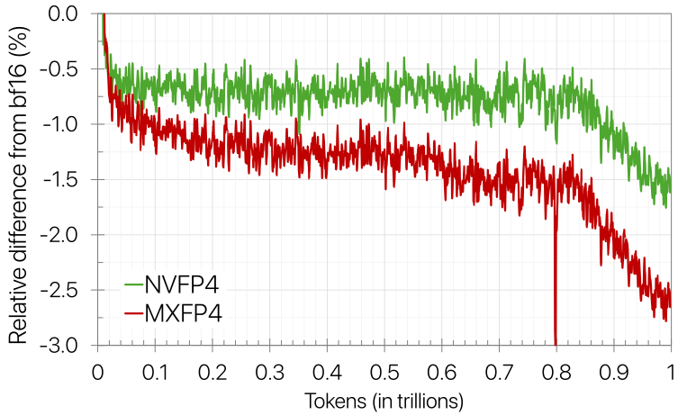
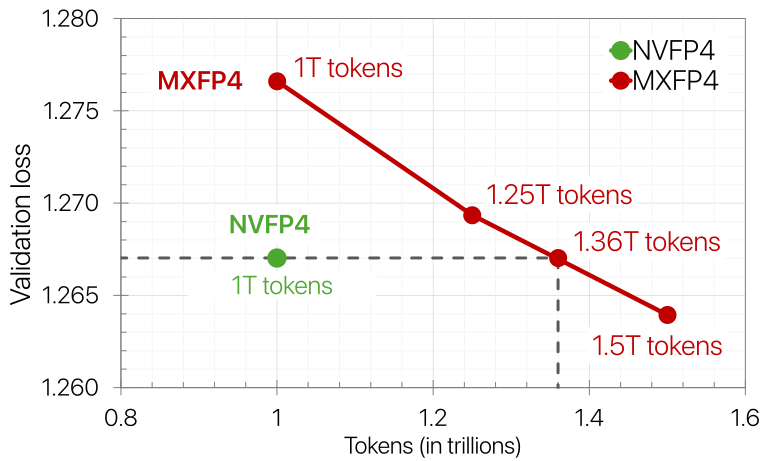
结论是：NVFP4 收敛到更好的损失。MXFP4 的相对误差约 2.5%，NVFP4 约 1.5%。为了弥补这个差距，作者把 MXFP4 的训练延长到 1T 到 1.5T 不等，发现 MXFP4 要多用 36% 的 token（1.36T 而不是 1T）才能达到 NVFP4 的损失。由于两种格式在硬件上的峰值速度相同，这意味着 MXFP4 要多花相应的训练时间。作者也说，将来应当在不同的参数量和训练长度上研究这两种格式的缩放规律。
5.2 结果的份量
把全文的实验放在一起看，下面几点决定了这些数字能说明多少问题。
基线是一个强的、而且精心配平的 FP8。12B 的对照不是 BF16，而是 NVIDIA 自己的块缩放 FP8 配方（权重 128×128、激活和梯度 1×128，首尾 3 块 BF16），数据、步数、学习率调度都相同。这让“与 FP8 持平”很有说服力。但两边留在 BF16 的线性层并不一样多：FP8 基线约 5%，NVFP4 约 16%（推算）。所以比较的是“两套各自调好的配方”，不是“同一网络只换格式”。
每种设置只跑了一次，下游分数只取最后一个检查点。表 2 里单项差异在两个方向上都有 3 分以上，说明几分以内的差异主要是噪声。代码任务两项都落后 2.5–3.2 分，这是唯一方向一致的差距，作者归因于检查点噪声，但没有验证。消融全部是单次运行；12B 的消融是从 3.43T 检查点分出去只跑约 0.5T，效应在零点几个百分点；附录 E 的大部分消融在 1.2B 上做，而作者自己指出 1.2B 上的结论（例如 Hadamard 矩阵大小、随机化）到 12B 就变了。
损失差距不大，但按 token 算并非可以忽略。12B 最终验证损失差略高于 1.5%。第 5 节给出了一把“尺子”：在 8B、1T token 的设置下，约 1 个百分点的相对损失差（MXFP4 的 2.5% 对 NVFP4 的 1.5%）相当于 36% 的训练 token。这把尺子不能直接搬到 12B、10T 上（规模、长度、基线都不同），但它提醒我们：1.5% 的损失差在“算力等价”的意义上不是零头，只是下游任务对它不太敏感（推算类比，报告没有做这个换算）。
报告没有测速度。全文没有端到端的训练吞吐、MFU 或每 token 成本，作者在引言里明确说不讨论运行效率；2–3 倍是 Tensor Core 的峰值算术吞吐。端到端收益会被以下因素冲淡：16% 的线性层仍是 BF16，注意力的批量矩阵乘是 BF16；每个张量要按两个方向分别量化；全张量 amax 多一趟显存读写（附录 B.1 承认）；Wgrad 输入要做 RHT；梯度要做随机舍入。报告也没有说明 10T 训练用的是什么 GPU、是否全程用真实 FP4 矩阵乘内核（后来的 Nemotron 3 Super 报告明确说用的是 Transformer Engine 的 NVFP4 GEMM 内核）。举个纯假设的例子（推算）：如果一个 FP8 训练步里线性层矩阵乘占 60% 的时间，换成 FP4 后这部分快 2 倍、其余不变，整步只快 \(1/(0.4+0.3)\approx1.43\) 倍；这还没算上面列的额外开销。
NVFP4 对 MXFP4 的比较，MXFP4 用的是“为 NVFP4 设计的配方”。MXFP4 只换了 RHT 大小（32），其余全照搬；缩放因子按本文的“向上取 2 的幂”来做。专门为 MXFP4 设计的方法（例如 Tseng 等的 MXFP4 训练、Quartet）没有被拿来对比，所以 36% 是“在这套配方下”的结论。比较只有 8B、1T 一个点，参照是 BF16。另外，这是硬件厂商比较自家格式与开放标准格式。
模型和场景的覆盖面。主实验是只有 6 个注意力块的稠密混合 Mamba-Transformer；纯 Transformer 只在 1.2B 的消融里出现过，MoE 被作者列为未来工作。报告也没有涉及后训练（SFT、RL）和长上下文扩展。
6 结论：作者自己说还差什么
作者的结论是：只要配上有针对性的方法（二维权重缩放、随机 Hadamard 变换、随机舍入等），用 NVFP4 做大规模预训练是稳定而准确的。12B 混合 Mamba-Transformer 在 10T token 上训练，损失和下游精度都紧跟 FP8 基线，这是“多万亿 token 规模上持续 4 位预训练”的第一个公开证据。在并排实验中，NVFP4 用更少的 token 达到了与 MXFP4 相当的损失。
作者列出的未来工作，恰好对应前面提到的局限：
- 在不损害收敛的前提下量化所有线性层，减少剩下的高精度层；
- 把 NVFP4 扩展到注意力和通信路径（目前注意力的批量矩阵乘是 BF16，张量并行归约也是 BF16）；
- 研究 NVFP4 在后训练中的用法；
- 在更大的模型、更长的训练、以及 MoE 等其他结构上验证；
- 进一步刻画 NVFP4 相对其他格式的预训练表现。
结论最后一句是：Blackwell 上的 NVFP4 训练已经通过 Transformer Engine 的一次更新得到完整支持。对应的代码改动是 Transformer Engine 的 PR #2177（“NVFP4 recipe”），它在 2025-09-29 合入，与报告 v1 在 arXiv 上发布是同一天；正式发布在 2025-10-07 的 Transformer Engine v2.8 中。
后来怎么样了
截至 2026-10，这份报告的后续可以分四条线来看：官方实现、NVIDIA 自己的大模型、学术界对 NVFP4 训练的改进，以及同伴格式 MXFP4 在部署和量化感知训练里的落地。
Transformer Engine：配方怎样落进代码
Transformer Engine v2.8 的发布说明写着“新增 NVFP4 训练配方的支持”。在 v2.8 的代码里，配方类 NVFP4BlockScaling 的默认设置与报告一致：前向的权重用二维量化、不做 RHT、不做随机舍入；前向输入（激活）和反向梯度在“按列使用”（也就是给 Wgrad 用）时做 RHT；反向梯度做随机舍入。代码注释特别说明 RHT 目前只用在按列的那一份，以便服务 Wgrad；三项都可以用环境变量关掉。截至 2026-10-20，仓库有 3,587 个 star。
Nemotron 3 Super / Ultra：NVFP4 预训练进入正式模型
NVIDIA 在 2025-12 的 Nemotron 3 白皮书（arXiv 2512.20856）里宣布，Nemotron 3 家族中的 Super 和 Ultra 用 NVFP4 训练。Nemotron 3 Super（120B 总参数、12B 激活的 MoE 混合 Mamba-Attention 模型，2026-03 发布）的技术报告写明：它在 25T token 上用 NVFP4 预训练，fprop、dgrad、wgrad 三次矩阵乘都用 Transformer Engine 的 NVFP4 GEMM 内核；量化方案沿用本文：权重二维块、激活与梯度一维块、Wgrad 输入做 RHT、梯度随机舍入。它的分层精度表比本文更细：
| 层 | 格式 | Super 报告给出的理由 |
|---|---|---|
| 其余所有线性层 | NVFP4 | — |
| 网络最后 15% | BF16 | 大规模训练的稳定性 |
| Latent 投影、MTP 层、QKV 与注意力投影、嵌入层 | BF16 | 对步时影响可忽略 / 保住 MTP 能力 / 少数注意力层的保真度 |
| Mamba 输出投影 | MXFP8 | 小规模实验里这一层量化成 NVFP4 下溢很多 |
Super 报告还记录了两个本文没有遇到或没有报告的现象。第一，训练中权重梯度里恰好为 0 的元素越来越多，到预训练结束占全部参数的 7%。他们在 Nemotron 3 Nano 结构上做对照，发现训练 1T token 时 NVFP4 的零梯度元素约是 BF16 的 3 倍；原因是二维权重块横跨了数值大和数值小的通道，导致 FC2 的 Dgrad 和 FC1 的 Fprop 里大量下溢，再经反向传播变成另一层的零梯度。第二，他们重复了本文附录 D 的“末段切回高精度”：在 19T token（退火前 1T）把所有张量切到 MXFP8，训练到 20.6T，损失变好了，但下游任务没有持续提升，所以最终模型全程用 NVFP4 预训练。Nemotron 3 Ultra（550B 总参数、55B 激活）于 2026-06 发布，官方页面同样写明“以 NVFP4 预训练”。这些都是 NVIDIA 的自述，没有独立复现。
学术界：怎样把 NVFP4 训练做得更准
- Quartet II（IST Austria 的 Panferov、Alistarh 等，arXiv 2601.22813，2026-01）：认为现有方法为了用随机舍入得到无偏梯度，牺牲了 NVFP4 的一部分表示能力。他们提出针对微缩放格式的无偏量化方法 MS-EDEN，量化误差比随机舍入低一半以上，并据此设计了线性层全部用 NVFP4 的方案；端到端实验最大到 1.9B 参数、38B token，Blackwell 内核相对 BF16 最高 4.2 倍。规模远小于本文的 10T。
- TetraJet-v2（清华，arXiv 2510.27527，ICML 2026）：所有线性层的激活、权重、梯度都用 NVFP4，指出权重振荡和离群值是两大障碍，提出无偏的双块量化、抑制振荡的 OsciReset 和保留离群值精度的 OutControl；在最大 370M 参数、212B token 的预训练上，把与 BF16 的差距平均缩小 51.3%。
- Four Over Six（MIT Han Lab，arXiv 2512.02010）：针对 2.4 节例子里看到的“靠近 6 的地方间距最大”，让每块在“把块最大值对齐到 6”和“对齐到 4”之间自适应选择，降低接近最大值的那些数的量化误差；在 Nemotron 3 Nano 30B-A3B 结构上的预训练实验里，训练损失比当时的 NVFP4 配方更接近 BF16。
本文之前的几篇 FP4 训练工作也值得对照：Tseng 等的“Training LLMs with MXFP4”（AISTATS 2025）最早把随机舍入加 RHT 用于 MXFP4 的反向传播，训练到 6.7B 参数；Chmiel 等的“FP4 All the Way”在 Intel Gaudi2 上做了 7B、最多 200B token 的全 FP4 训练，比较了块大小与缩放格式后同样认为 NVFP4 式的 16 元素、E4M3 缩放最好；Castro 等的 Quartet 给出了 FP4 训练的低精度缩放律。本文的不同在于把规模推到 12B、10T token，并且用的是硬件原生的 NVFP4。
同伴：MXFP4 在部署与量化感知训练中的落地
有意思的是，开放标准 MXFP4 虽然在本文的预训练对比中输给了 NVFP4，却在模型发布和后训练里用得更多，而且用法都是“只量化 MoE 专家权重”：
- gpt-oss（OpenAI，2025-08）：后训练时把 MoE 权重量化成 MXFP4，每参数 4.25 位；MoE 权重占总参数 90% 以上，这让 120b 模型能放进一张 80 GB 的 GPU。
- DeepSeek-V4（2026-04）：在后训练阶段做 FP4（MXFP4）量化感知训练，对象是 MoE 专家权重和 CSA 索引器的 QK 路径；FP32 主权重先量化成 FP4 再无损地反量化成 FP8 参与计算（每个 128×128 的 FP8 块里含若干 1×32 的 FP4 子块），从而复用现有 FP8 训练框架。报告指出，在现有硬件上 FP4×FP8 的峰值算力与 FP8×FP8 相同，收益主要来自显存和带宽。见 DeepSeek-V4 精读。
- Kimi K3（2026-07）：从 SFT 开始到 RL 全程做量化感知训练，MoE 专家权重用 MXFP4、激活用 MXFP8，注意力投影、共享专家、路由器等保持高精度；RL 的采样和训练用同一套量化，消除训练与推理的不一致。
就本站所知，截至 2026-10，“从头用 FP4 做大规模预训练”的公开报告仍集中在 NVIDIA 自己（本文与 Nemotron 3），其他团队在大模型上采用 FP4，主要是推理权重和后训练的量化感知训练。
想看两种 FP4 格式的对照图、一个线性层三次矩阵乘的配方总览和配套简答题，见结构拆解页。
作者
论文署名为 NVIDIA，贡献者名单按分工列出、组内按姓氏字母排序，没有区分第一作者。下面只挑出几位与本文主题直接相关、背景可以从其公开论文或项目页查证的贡献者；单位均为 NVIDIA（论文发表时）。
影响力
- 引用：见页首（Semantic Scholar 快照）。
- 发表：NVIDIA 技术报告，arXiv 首版 2025-09-29，v2 2026-03-04；截至 2026-10-20 本站没有查到它在同行评审会议或期刊上发表。
- 代码：配方实现在 NVIDIA/TransformerEngine（Apache-2.0）：PR #2177 于 2025-09-29 合入，v2.8（2025-10-07）正式发布 NVFP4 训练配方；仓库 3,587 个 star、868 个 fork（截至 2026-10-20）。
- 采用：NVIDIA Nemotron 3 Super（25T token）与 Nemotron 3 Ultra 以 NVFP4 预训练（NVIDIA 官方页面与 Super 技术报告）；学术界的 Quartet II、TetraJet-v2、Four Over Six 等以本文的 NVFP4 配方为对照或出发点。
延伸阅读
- 相关精读：FP8 格式、QuaRot、DeepSeek-V3
- FP4 训练结构拆解：两种 FP4 格式对照图、线性层三次矩阵乘的配方图、简答题。
- FP8 格式拆解：E4M3 / E5M2、张量级与块级缩放的前史。
- DeepSeek-V3 拆解：1×128 / 128×128 细粒度 FP8 缩放，本文 FP8 基线的来源。
- DeepSeek-V4 拆解 与 Kimi Linear / Kimi K3 拆解：MXFP4 专家权重的量化感知训练。
- AMD / ROCm 拆解：另一家硬件上的 FP4 与 MX 格式支持。
- 返回论文书架
原文：NVIDIA. Pretraining Large Language Models with NVFP4. 技术报告，arXiv:2509.25149（本页依据 v2），以 CC BY 4.0 许可发布。本页的原文图 1–14 取自 arXiv HTML 版原文（v2），未做修改，图注为本站撰写。正文为本站撰写的中文精读笔记，并非翻译；标“推算”“读图”的数字由本站计算或从原图矢量数据量得，可能有误差，数字与结论以原文为准。OCP MX 规范、Transformer Engine 代码、Nemotron 3 Super 技术报告、gpt-oss / DeepSeek-V4 / Kimi K3 报告与 NVIDIA 技术博客中的信息按各自来源引用。